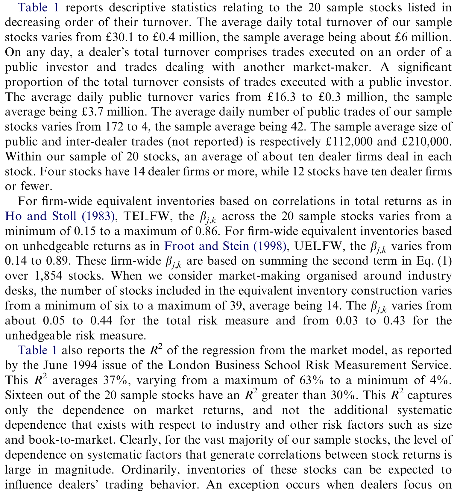
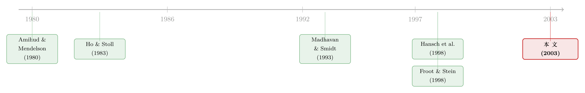

长一百万通用、空一百万福特，我还算「长」吗？
本文读的是 Naik & Yadav (2003, Journal of Financial Economics)：理论上，做市商应当按「组合」管理库存——把相关股票的头寸折算成一个「等价库存」来定价交易；但用伦敦交易所的成交审计数据一看，真正驱动报价、成交与执行质量的，却是【一只一只股票各算各的】普通库存。换句话说，做市商在「逐股」管理风险，而不是「全局」管理风险。原因不在金融，而在组织：分散化的做市架构、加上按个人盈亏考核的激励，让相关性这件本该被定价的事，被悄悄忽略了。
1 一个看似无聊、其实很要命的问题
论文开篇就抛出一句话，干净得像一道面试题：
如果我作为一家做市商，在通用汽车（General Motors）上多头持有一百万美元，同时在福特（Ford）上空头持有一百万美元，那么我还算「在通用上多头一百万美元」吗？
任何学过一点投资组合理论的人都会条件反射地回答：当然不算。通用和福特的收益高度正相关，一多一空，组合层面的净风险敞口被对冲掉了一大半。你账面上写着「通用 +100 万」，但你真正扛在身上的风险，远小于这个数字。
这正是问题的全部张力所在。做市商的库存风险，到底应该按「单只股票」算，还是按「整个组合」算？
这听上去像个技术细节，却直接决定了做市商怎么报价、愿不愿意接你这笔单、给你什么样的成交价。而做市商，恰恰几乎从不只做一只股票的市场。论文给的数字很扎眼：大多数 NYSE 专家做市商（specialist）、每一家 NASDAQ「批发商」、以及伦敦交易所（London Stock Exchange，下称 LSE）约四分之三的做市商，都同时在一百只以上的股票里做市；2002 年 1 月，九家 NYSE 专家做市商一共为 2,575 只股票做市。既然手里攥着一整篮子相关的股票，那么按教科书的逻辑，他们管理风险时就【应该】盯住组合层面的总敞口，而不是某一只股票孤立的持仓。
这篇论文要问的，就是：现实里他们真是这么干的吗？
2 三种相互竞争的假说
要回答这个问题，首先得把「应该怎么做」这件事讲清楚。论文把它整理成三个相互竞争、可被数据检验的假说。
第一种，Ho 和 Stoll（1983）的等价库存。 这是把相关性写进做市理论的开山之作。他们证明：做市商在某只股票上的交易行为，不应由这只股票的【普通库存 (ordinary inventory)】决定，而应由它的【等价库存 (equivalent inventory)】决定——所谓等价库存，就是把这只股票的普通库存，再加上其它所有相关股票头寸带来的「强化」或「抵消」效应之后的净值。回到开头那个例子：你在通用上的等价库存，要把福特的空头折算进来，于是它远小于账面的一百万。
第二种，Froot 和 Stein（1998）的不可对冲风险。 他们研究的是一个更现实的金融中介：有些风险能在市场上对冲掉，有些不能。结论是，中介会把所有「可交易、可对冲」的风险（比如用 S&P 500 或 FTSE 100 指数期货对冲掉的市场风险）尽数对冲，于是它对一笔新交易的态度，只取决于这笔头寸里【不可对冲 (unhedgeable)】的那部分，以及组合里其它股票的不可对冲风险与之的相关性。换句话说，相关性依然重要，但要算的是「剔除市场因子之后的残差收益」之间的相关，而不是 Ho-Stoll 那种总收益之间的相关。
接着，一个自然的问题是：这两种理论，有什么共同点？答案是——它们都坚持，相关性应当被定价，逐股孤立地看库存是错的。 区别只在于「按总收益相关」还是「按不可对冲收益相关」来折算。
但真正关键的一步在于第三种假说，论文称之为「分散化做市模型（decentralized market-making model）」。它不是一个金融模型，而是一个组织模型。一家做市商内部，并不是一个全知全能的大脑，而是几十个被分派了不同股票的【个体交易员 (individual dealer)】。每个人各管各的几只股票，各自决定报什么价、接不接这笔单、收多少价差。在这种架构下，有两股力量把交易员往「逐股思维」上推：
- 其一，信息共享难。 几十个交易员在几乎连续的时间里，对一大堆不同股票同时报价、谈判、成交，要在这中间实时共享「谁手里有什么相关头寸」，几乎不可能。交易台内部或许能弱弱地沟通，但全公司层面基本是失灵的。
- 其二，激励不相容。 交易员的业绩，是按他名下那几只股票产生的交易利润来考核和发薪的。如果你因为别的交易员在相关股票上有头寸，就去限制我在我这只股票上的持仓，那等于污染了对我个人贡献的「干净」度量，徒增公司的代理成本。
于是矛盾出现了：从相关风险里省下来的成本，要和考核被污染带来的代理成本相权衡。分散化做市模型预测：在信息与激励的双重作用下，每个交易员只关心自己名下股票的普通库存，公司整体的交易行为，也就由普通库存、而非等价库存来驱动。
这三种假说之争，本质上是「金融逻辑」和「组织逻辑」的对撞。金融逻辑说相关性必须被定价；组织逻辑说，一旦你把风险管理切碎了分给一群被单独考核的人，相关性这件事就会在裂缝里漏掉。哪一种主导现实，理论说了不算，只能交给数据。
3 核心方程：等价库存到底怎么算
这篇论文虽然以实证为主，但它的全部检验都建立在一个定义式上——Ho-Stoll 的等价库存。把它讲透，后面的一切才站得住。
设 \(OI^{j}_{i,t}\) 为做市商 \(i\) 在 \(t\) 时刻、在股票 \(j\) 上的普通库存。那么它在股票 \(j\) 上的等价库存为：
这里的权重 \(b_{j,k}\)，是把股票 \(k\) 的收益对股票 \(j\) 的收益做回归得到的斜率：
$$ b_{j,k} = \frac{\mathrm{COV}(R_{j}, R_{k})}{\mathrm{VAR}(R_{j})} $$
直觉是这样的：如果 \(k\) 和 \(j\) 正相关（\(b_{j,k}>0\)），那么持有 \(k\) 就相当于「变相」多持了一点 \(j\)，所以要把 \(b_{j,k} \cdot OI^{k}\) 加到 \(j\) 的库存上去；如果两者负相关，这一项就是负的，相当于一部分 \(j\) 的头寸被抵消了。把所有 \(k\neq j\) 的股票都这样折算、再加总，就得到了 \(j\) 的「等价库存」——这才是 Ho-Stoll 眼中做市商真正扛在身上的、关于股票 \(j\) 的风险。Ho-Stoll 在两只股票的情形下证明了他们的命题 1，并指出推广到多只股票时，「为评估在股票 \(i\) 上一笔交易的影响，所有与 \(i\) 相关的股票 \(j\) 都用 \(b_{ji}=s_{ji}/s_i^{2}\) 作为权重加总进来」——也就是上面这个式子。
论文进一步把等价库存算了【四个版本】，差别只在两处：\(b_{j,k}\) 用总收益算还是用剔除市场因子后的「异常收益」算；以及求和范围是整个公司层面、还是只在同一行业台（industry desk）内部。
- TEI FW（Total, Firm-Wide）：用总收益相关、在全部 1,854 只股票上加总——最纯粹的 Ho-Stoll。
- TEI ID（Total, Industry-Desk）：用总收益相关、只在同行业股票内加总——对应「按行业分台做市」这种常见组织形式。
- UEI FW / UEI ID：把上面两者的 \(b_{j,k}\) 换成用市场模型过滤后的异常收益来算——对应 Froot-Stein 的不可对冲风险。
如此一来，三种理论就被翻译成了三套可以直接放进回归里的库存序列：普通库存 \(OI\)、总等价库存 \(TEI\)、不可对冲等价库存 \(UEI\)。剩下的，就是让数据来裁决。
4 数据：一份能「跨股票认人」的审计底稿
这篇论文能做成，靠的是一份别人没有的数据。
样本期是 1994 年 8 月 1 日到 10 月 31 日，共 65 个交易日。LSE 在当时（和 NASDAQ 类似）是一个【竞争性报价市场 (competing dealer market)】：做市商的买卖报价显示在屏幕上，但公众的成交往往通过电话双边谈判达成，可以获得价格改善。数据是 LSE 全部股票的逐笔报价与成交，带时间戳，并标明了每笔交易里是哪个做市商、是买还是卖、是作为代理还是自营。
这份数据真正的「独门」之处，论文说得很清楚：以往大多数研究（如 Hansch et al., 1998；Reiss & Werner, 1998）用的数据里，同一家做市商在不同股票上的代码是变化的，于是你根本没法把它在不同股票上的头寸拼起来，做不了任何「组合层面」的推断。而这份数据，给同一家做市商在所有股票上分配了【同一个代码】。正是这一点，让作者得以重建每家做市商在单只股票上、以及跨股票汇总后的库存——这恰恰是检验「逐股还是组合」这个问题的前提。
为了计算量与展示的方便，作者从大、中盘股里随机抽了 20 只（10 只 FTSE-100、10 只 FTSE-250）。库存序列按 Hansch et al.（1998）的办法做了标准化——因为不同做市商资本与风险厌恶不同，库存的绝对值不可比。权重 \(b_{j,k}\) 则用样本期前五年的 60 个月度收益估出来，\(j\) 跑遍 20 只样本股，\(k\) 跑遍其余 1,853 只。
表 1 给出了这 20 只股票的描述性统计，按换手率降序排列。样本股的日均总换手从 £30.1m 到 £0.4m 不等，均值约 £6m；日均公众换手从 £16.3m 到 £0.3m，均值 £3.7m；日均公众成交笔数从 172 到 4，均值 42 笔；公众与做市商间成交的平均规模分别约为 £112,000 和 £210,000。每只股票平均约有 10 家做市商。

Table 1: reports descriptive statistics relating to the 20 sample stocks listed in
这里有两个数字，对全文的逻辑特别重要。
第一，相关性确实很强。 全公司层面、按总收益算的 \(b_{j,k}\)，在 20 只样本股上从 0.15 到 0.86；按不可对冲收益算的，从 0.14 到 0.89。即便缩到行业台内部，\(b_{j,k}\) 也有 0.05 到 0.44（总风险）和 0.03 到 0.43（不可对冲风险），每个行业内的股票数从 6 只到 39 只、均值 14 只。
第二，系统性依赖普遍存在。 表 1 报告的市场模型 \(R^2\) 平均 37%，从 4% 到 63%，20 只股票里有 16 只的 \(R^2\) 超过 30%。也就是说，对绝大多数样本股，库存之间本就【有理由】互相影响做市商的行为。换句话说，如果做市商真按组合管库存，这个样本里应该看得很清楚。这就把举证责任压到了实证结果身上：相关性这么强，等价库存却如果还是「不管用」，那才真说明问题。
5 四个检验，四次同样的答案
论文从四个角度检验了做市商的行为，每一个角度都在问同一句话：到底是普通库存说了算，还是等价库存说了算？而四次得到的，是同一个答案。
其一，库存的均值回复 (mean reversion)。 如果做市商在主动管理某种库存，那种库存就应当表现出更强的向均值回复的倾向（接了单偏离目标，就会想方设法把它拉回来）。结果是：普通库存的均值回复，比两种等价库存中的任何一种都更强。 做市商在「往回拉」的，是逐股的普通持仓，不是组合折算后的等价持仓。
其二，报价摆放策略 (quote placement)。 做市商调高调低自家报价，是为了诱导订单流来削减库存。那么报价的变动，是跟着哪种库存的变动走？答案是：报价变动显著地与普通库存的变动相关，而与两种等价库存都不相关。
其三，谁来成交。 在公众成交和做市商间成交里，是哪家公司挺身接单？理论上，等价库存最「长」（最「短」）的那家应当去卖（去买）。但数据显示：是普通库存出现分歧的公司，而非等价库存出现分歧的公司，在执行公众交易、在做市商之间相互交易。
其四，执行质量 (quality of execution)。 这是本文的一个原创贡献——首次把库存和「成交质量」联系起来。一家库存压力大、急着调头寸的做市商，应当愿意给出更好的价格来吸引能帮它减仓的那个方向的订单。结果再次一致：是普通库存出现分歧的公司，而非等价库存出现分歧的公司，提供了显著更好的执行质量。
于是反转出现了——准确地说，是「理论预言的那个反转，并没有发生」。相关性明明很强（\(b\) 高达 0.8 以上、\(R^2\) 平均 37%），等价库存按理应该主导，可四个维度异口同声：真正驱动做市商行为的，是一只一只各算各账的普通库存。 Ho-Stoll 与 Froot-Stein 所强调的相关风险敞口，在真实的交易行为里，并没有被充分定价。
把四块证据拼到一起，结论就只剩一个解释能站住：分散化做市模型。做市不是一个统一大脑在算组合，而是一群被单独考核的人在各管各的摊子。
注意这里的「负面结果」恰恰是最有信息量的。在一个相关性极强、按教科书最该看到组合效应的样本里，作者反复地、用四种不同方法，都没有找到等价库存主导的证据。这不是「没测出来」，而是「在最该测出来的地方都没有」——证据的分量正来自于此。
6 为什么这事远不止于做市商
如果故事到此为止，它只是一篇漂亮的市场微观结构论文。但作者用一段话，把它推向了更大的版图。
他们虽然研究的是伦敦的股票做市商，但结论对 NYSE 的专家做市商直接适用：2002 年 1 月，九家专家公司为 2,575 只股票做市，每家管 74 到 591 只不等，背后是约 500 名个体专家，每人通常只做四到十只。比如 Wagner Stott Bear Specialist 一家做 347 只股票、雇 86 名专家。本文的含义是：每个个体专家，只会盯着自己那几只股票的库存，而不会去管同公司其他专家手里那些可能相关的股票。
更进一步，这其实是一切「分散化决策」组织的通病。 跨国公司的财务教科书都建议：企业应当关注外汇敞口的【组合】，而不是一种货币一种货币地看。但本文的逻辑提示我们：被按「一两个国家的业绩」考核的经理人，有动机忽略公司内其他经理的抵消性敞口，于是把汇率风险也按「逐币种」来管。资本预算也一样——如果分部经理的薪酬绑在本分部的业绩上，他考虑的就是项目对【本分部】的总风险，而不是项目对【全公司】风险的边际贡献。
作者还特意把自己和 Vayanos（2003）区分开来：在 Vayanos 的模型里，分散化的代价来自信息聚合过程中的损耗；而在本文的做市商这里，代价主要来自「业绩考核被污染」。同样是「分散化有成本」，机制并不相同。
（关于「同一个大脑该不该统一管理多只相关股票的库存」，可以对照看一篇做市理论的近作《做市商的「一本账」：当一只股票的冲击，悄悄改写了另一只的报价》——那篇正是从理论上推演「一个统一的多资产做市商」会如何让一只股票的冲击外溢到另一只的报价上，恰好是本文用数据反驳的那个「理想做市商」形象。）
7 文献脉络
把这条线索捋直，故事是这样演进的。
最早，做市商的库存模型把每只股票当成孤岛：Amihud 和 Mendelson（1980）的经典做市模型里，做市商根据单一资产的库存来调整买卖报价。真正把「相关性」引入做市理论的，是 Ho 和 Stoll（1983）——他们告诉我们，孤立地看一只股票的库存是错的，应该看把相关头寸折算进来的等价库存。
接着，实证学界开始大量检验「做市商到底管不管库存」。Hasbrouck 和 Sofianos（1993）、Madhavan 和 Smidt（1993）、Madhavan 和 Sofianos（1998）盯住 NYSE 专家做市商的库存；Lyons（1995）研究单个外汇做市商，Mann 和 Manaster（1996）研究芝加哥期货市场的「剥头皮」交易员；在伦敦，Hansch、Naik 和 Viswanathan（1998）、Reiss 和 Werner（1998）检验了个体做市商的库存控制。这些研究几乎一致地确认：做市商确实在主动管理单只资产的库存。

然后，Froot 和 Stein（1998）从风险管理的角度切入，把「可对冲 vs 不可对冲」的区分带进来，给「该按什么相关性折算」提供了第二个版本的答案。
但这一整条线索里，始终缺了一块拼图：所有这些实证研究用的数据，都【没法跨股票认出同一家做市商】，于是没人能真正检验「逐股还是组合」。Naik 和 Yadav（2003）——也就是本文——正是踩在这块空白上：他们拿到一份能跨股票追踪同一做市商的 LSE 审计数据，第一次把三种假说放在同一张桌子上对决，并给出了一个略带反讽的答案——理论上最该被定价的相关性，在分散化的组织里被悄悄忽略了。
（顺带一提，这份 LSE 数据后来被反复使用，比如《为什么大单反而能拿到折扣？——把伦敦交易所的「关系」算成一笔账》；而「做市商不靠改价管库存」这件事，在外汇市场也有呼应，见《全世界最大的市场，做市商却从不靠「改价」管库存》。）
8 评论与延伸（Q&A + 研究方向）
(a) 几个可能的疑问
Q：这和「做市商不管库存」是一回事吗？
不是，恰恰相反。本文确认了做市商【非常】积极地管理库存——只不过管的是逐股的普通库存。前一代文献（Hasbrouck-Sofianos 等）问的是「管不管」，本文问的是「按什么口径管」。结论是：管，但按股票一只只地管，不按组合管。
Q：等价库存「不显著」，会不会只是因为它根本没什么相关性可折算？
这正是作者花大力气堵上的漏洞。表 1 显示相关性其实很强：全公司口径的 \(b_{j,k}\) 高达 0.86–0.89，市场模型 \(R^2\) 平均 37%、16/20 只超过 30%。在一个相关性如此之强、最该出现组合效应的样本里仍然测不到等价库存主导，才使「普通库存主导」这个结论格外有说服力。
Q：为什么 Ho-Stoll 和 Froot-Stein 这两个版本【都】输了？
因为它们共享同一个致命前提——相关性应当被定价、库存应当在公司层面汇总。本文的发现是组织层面的：风险管理被切碎分给了一群按个人盈亏考核的交易员，于是无论你用总收益相关（Ho-Stoll）还是不可对冲收益相关（Froot-Stein）来折算，那个「跨人汇总」的动作在现实里根本没发生。输的不是某个具体的相关性定义，而是「集中化」这个共同假设。
Q：那理论模型岂不是被证伪了？
更准确的说法是「被加了一道边界条件」。Ho-Stoll 和 Froot-Stein 在「单一决策者」假设下都没错；本文指出，一旦把组织结构（信息摩擦 + 激励考核）放进来，这些模型的预测就不再成立。它不是推翻理论，而是揭示了理论的适用前提——这反而对建模者很有用。
Q：只有 20 只股票、65 个交易日，样本会不会太小？
这是合理的担心。但本文的检验是逐笔成交层面的（日均公众成交 4–172 笔、样本均值 42 笔），单位是「交易」而非「股票」，有效观测量远大于 20。更关键的是，结论是【四个相互独立的检验】（均值回复、报价、谁成交、执行质量）共同指向同一方向——任何一个偶然都不容易让四个一起偏。作者也提到做了大量稳健性检验（第 5 节）。
Q：把结论推广到跨国公司外汇管理、资本预算，是不是跨得太远？
这部分是「类比」而非「证据」，作者也说得比较克制。其底层机制——分部经理被按本分部业绩考核，于是忽略全公司层面的抵消敞口——确实和做市商完全同构，逻辑上站得住。但「逻辑同构」不等于「实证已证」，把它当作有待检验的猜想更稳妥。
(b) 几个可能的研究问题与提案
1. 把同样的检验搬到公司债做市商身上。 【经济故事】公司债是逐笔、场外、由交易员分券种做市的典型市场，且同一发行人的不同债券、同评级同行业的债券之间相关性极高——比股票更甚。如果连股票市场都「逐股管库存」，债券市场会不会更彻底？这直接关系到信用市场的流动性如何在相关券种间传染。 【可行性】中。TRACE 加上交易商身份（regulatory TRACE 或 FINRA 内部数据）可以重建交易商在多只债券上的库存；识别上可沿用本文的四类检验。难点在于拿到能跨券种认人的数据，以及债券交易稀疏带来的库存估计噪声。
2. 外资做市商 vs 本地做市商，谁更「组合化」？ 【经济故事】跨国投行往往有全球风险台（global risk desk），本地券商则更碎片化。如果「组织集中度」决定了相关性能否被定价，那么风险管理更集中的外资做市商，理应比本地做市商更接近等价库存的预测。这能把「组织结构 → 定价行为」这条因果链做得更干净。 【可行性】中。需要带做市商类型标签、且能跨股票认人的交易数据（某些新兴市场或欧洲交易所有此类监管数据）。识别可用做市商内部重组（设立/撤销集中风险台）作为事件冲击。
3. 用一次「考核制度改革」做自然实验。 【经济故事】本文的核心机制是「按个人盈亏考核 → 污染顾虑 → 逐股管库存」。如果某家做市商把考核从「个人逐股盈亏」改成「交易台组合盈亏」，那么改革后它的行为应当向等价库存的预测移动。这能把本文的相关性证据升级为因果证据。 【可行性】低到中。最大障碍是找到这样一次清晰的、外生的薪酬/考核制度变更，并拿到改革前后的逐笔库存数据。一旦找到，识别会非常漂亮（DiD：改革台 vs 未改革台）。
4. 执行质量与库存口径的横截面定价含义。 【经济故事】本文发现普通库存分歧大的做市商给出更好的执行。那么投资者若能观察到做市商的库存状态，理论上可以「挑」做市商成交、系统性地省下交易成本。这把一个组织事实，连到了可交易的执行策略上。 【可行性】中。需要带做市商身份的逐笔成交 + 重建的库存序列；可检验「向库存压力大的做市商挂单」是否真能获得更优价格，以及这种机会是否随市场透明度而消失。
9 参考文献
- Amihud, Y., Mendelson, H. (1980). Dealership market: market making with inventory. Journal of Financial Economics 8, 31–53.
- Froot, K., Stein, J. (1998). Risk management, capital budgeting, and capital structure policy for financial institutions: an integrated approach. Journal of Financial Economics 47, 55–82.
- Hansch, O., Naik, N.Y., Viswanathan, S. (1998). Do inventories matter in dealership markets? Evidence from the London Stock Exchange. Journal of Finance 53, 1623–1655.
- Hasbrouck, J., Sofianos, G. (1993). The trades of market-makers: an analysis of NYSE specialists. Journal of Finance 48, 1565–1594.
- Ho, T., Stoll, H. (1983). The dynamics of dealer markets under competition. Journal of Finance 38, 1053–1074.
- Lyons, R. (1995). Tests of microstructure hypotheses in the foreign exchange market. Journal of Financial Economics 39, 1–31.
- Madhavan, A., Smidt, S. (1993). An analysis of daily changes in specialist inventories and quotations. Journal of Finance 48, 1595–1628.
- Madhavan, A., Sofianos, G. (1998). An empirical analysis of NYSE specialist trading. Journal of Financial Economics 48, 189–210.
- Mann, S., Manaster, S. (1996). Life in the pits: competitive market making and inventory control. Review of Financial Studies 9, 953–975.
- Naik, N.Y., Yadav, P.K. (2003). Do dealer firms manage inventory on a stock-by-stock or a portfolio basis? Journal of Financial Economics 69, 325–353.
- Reiss, P., Werner, I. (1998). Does risk sharing motivate inter-dealer trading? Journal of Finance 53, 1657–1704.
- Vayanos, D. (2003). The decentralization of information processing in the presence of synergies. Review of Economic Studies, forthcoming.
我的判断。 这篇论文的贡献，不在于又测了一遍「做市商管不管库存」，而在于它把市场微观结构和组织经济学缝在了一起：它用一份罕见的、能跨股票认人的数据，证明了一个反直觉的事实——相关风险这件最该被定价的事，恰恰因为公司内部的分散化和激励考核而被系统性忽略。负面结果之所以可信，是因为它出现在一个相关性极强、最该出现组合效应的样本里，且由四个独立检验共同支撑。
对识别，我有两点保留。其一，20 只股票、三个月的样本，毕竟偏薄；虽然检验落在逐笔成交层面、有效样本不小，但跨市场、跨年代的外部有效性仍待验证。其二，本文的证据是相关性而非因果——它说明「行为符合分散化模型」，但没有一次外生冲击能直接证明「正是考核制度导致了逐股行为」。把薪酬/组织结构的变更当作处理，做一次干净的 DiD，是我最想看到的下一步。再往前，这个框架最有价值的延伸，恐怕是公司债与信用市场：那里券种相关性更高、做市更碎片化，「逐券还是组合」的答案，可能直接写在信用市场的流动性传染里。